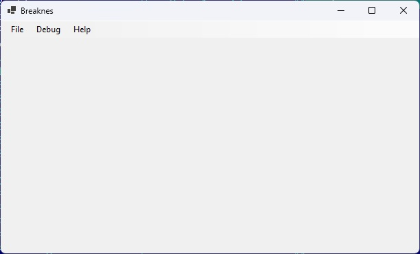
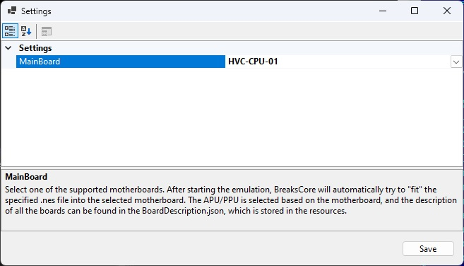

Main window

- File → Load ROM Dump… — select the
.nesROM image. The emulation starts right away. - Settings… — edit the settings.
- Exit — close the application.
Settings

- Save — save and close.
Source: Wiki/UserManual.md · more docs: Emulator life cycle, About